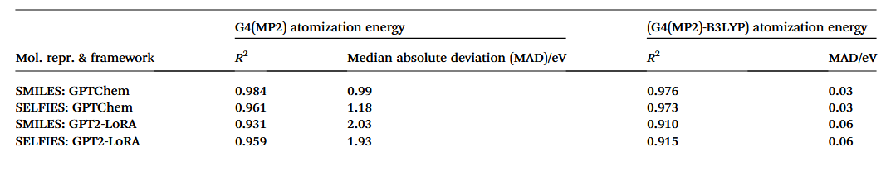
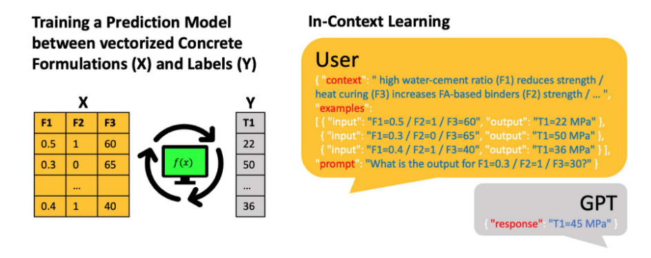
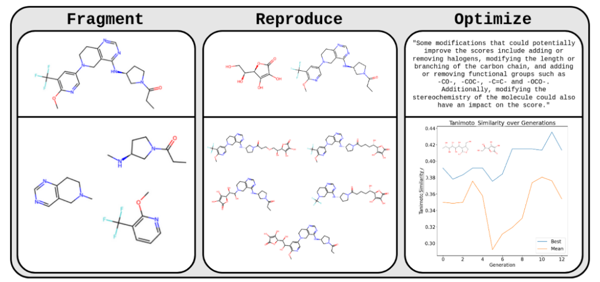
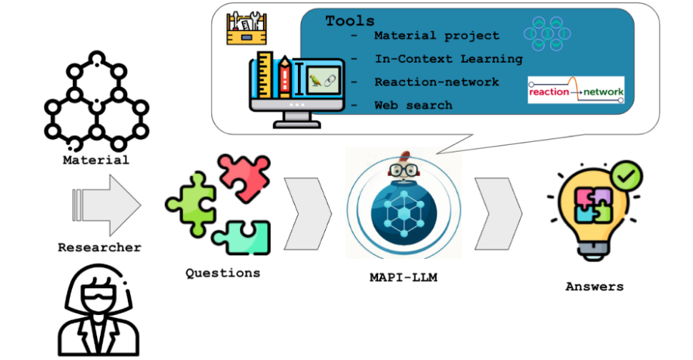
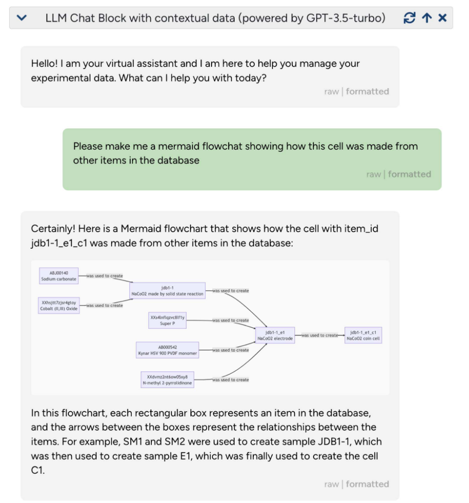
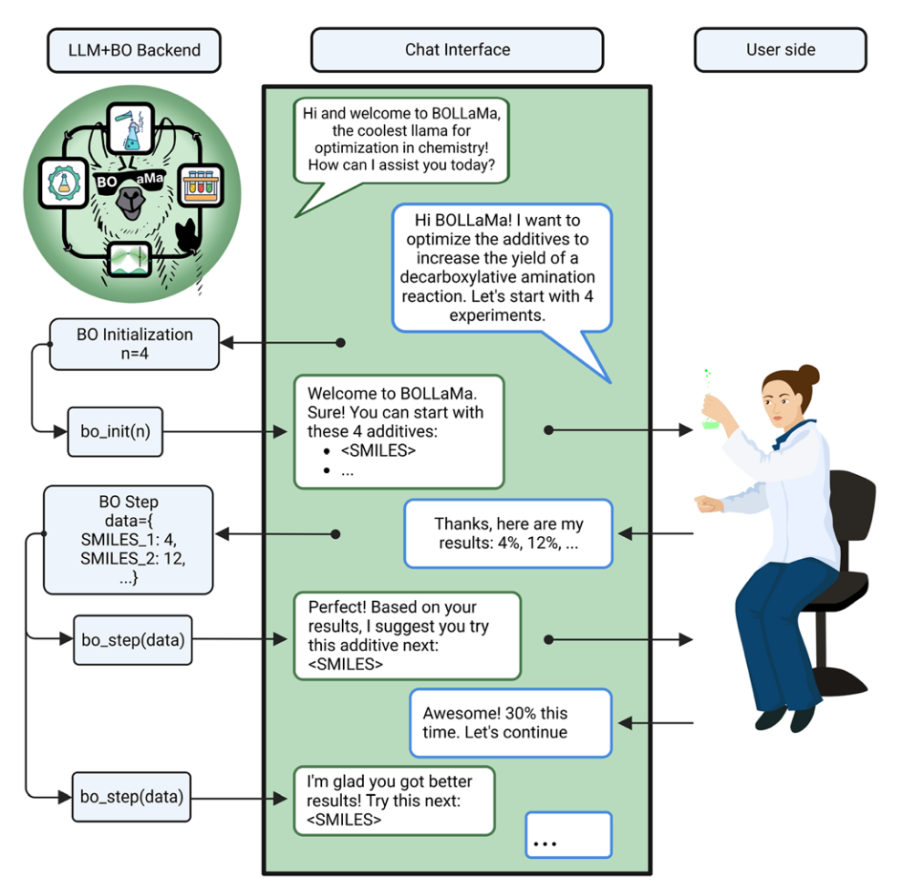
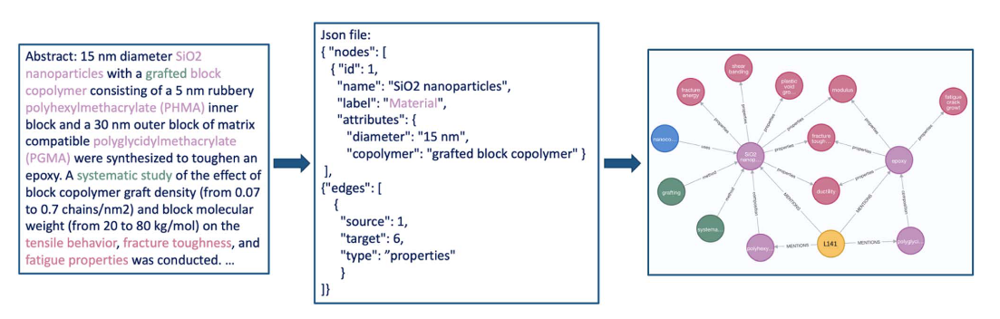
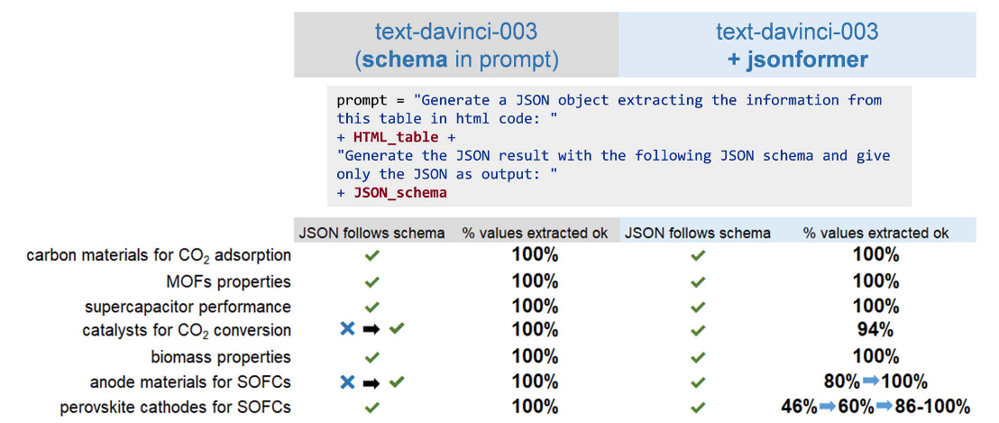
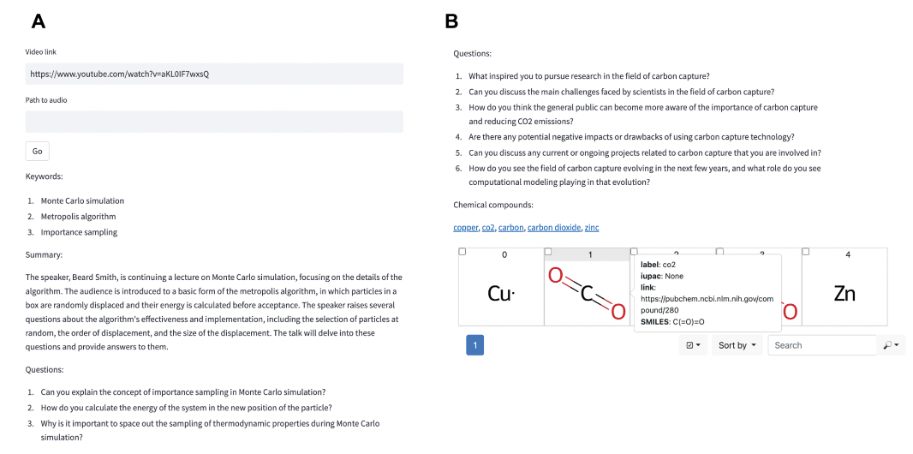

近年来，以GPT-4为代表的大型语言模型（LLMs）不仅在自然语言处理领域掀起革命，其触角也正以前所未有的速度延伸至科学研究的核心地带。当“人工智能驱动科学发现”（AI for Science）从口号变为现实，我们不禁要问：这些强大的语言模型，究竟能为严谨、复杂的化学与材料科学带来什么？它们仅仅是现有工具的补充，还是预示着一场深刻的研究范式变革？一篇发表于 Digital Discovery 的论文，通过记录一次别开生面的黑客松活动，为我们揭示了LLMs在这一交叉领域令人瞩目的潜力与挑战。这不仅仅是一份成果清单，更是一次对未来科学工作方式的深刻反思。
摘要：
GPT-4 等大型语言模型 （LLM） 引起了许多科学家的兴趣。最近的研究表明，这些模型可能在化学和材料科学中有用。为了探索这些可能性，我们组织了一场黑客马拉松。本文记录了作为此 Hackath 的一部分构建的项目。参与者将 LLM 用于各种应用，包括预测分子和材料的性质、为工具设计新颖的界面、从非结构化数据中提取知识以及开发新的教育应用程序。多样化的主题以及可以在不到两天的时间内生成工作原型的事实表明，LLM 将深刻影响我们领域的未来。丰富的思想和项目集合还表明，LLM 的应用不仅限于材料科学和化学，还为广泛的科学学科提供了潜在的好处。
背景：打破“刚性”工具与“模糊”科研间的壁垒
在LLMs崭露头角之前，机器学习（ML）早已在化学与材料科学领域取得显著进展，例如加速分子模拟、预测材料性质等。然而，一个普遍存在的痛点是，现有的ML工具往往是为特定任务量身定制的“手工作坊”产品。它们通常需要严格定义的结构化输入（如特定格式的表格、特定参数的图像），输出格式也缺乏统一标准。这种工具层面的“刚性”（rigidity），与科学研究，尤其是实验科学内在的“模糊性”（fuzziness）形成了鲜明对比。
化学家们描述一个分子可能有多种方式（IUPAC命名、俗名、SMILES字符串等），记录实验过程时，“轻轻搅拌”与“剧烈搅拌”这样微妙的描述可能对结果至关重要，但这些充满上下文、难以量化的信息，却很难直接、无损地转化为传统ML模型所需的结构化表格。我们目前的“解决方案”往往是编写大量的转换程序和“胶水代码”来连接不同的工具，但这不仅效率低下，还常常导致信息丢失，并且科研人员需要不断学习新的文件格式和接口，疲于奔命。
这篇论文的重要性在于，它敏锐地捕捉到了这一核心矛盾，并提出大型语言模型或许正是打破这一僵局的关键。作者们认为，LLMs作为一种通用的基础模型技术，其强大的自然语言理解、生成、工具调用以及基于知识库推理的能力，有望弥合非结构化科学语言与结构化数据/工具操作之间的鸿沟。
黑客松：在实践中探索LLM的无限可能
为了系统性地探索LLMs在材料科学与化学领域的实际应用潜力，论文作者组织了一次线上黑客松活动。这种形式汇聚了来自8个国家、22个机构的不同背景专家，在极短的时间内（1.5天）聚焦于利用LLMs解决真实问题，并要求产出可行的原型。论文的核心贡献，正是对这次活动中诞生的14个项目进行的梳理与展示。虽然这些项目尚非成熟产品，其开发速度之快（作者强调若无LLM可能需数月）和主题之多样性，本身就雄辩地证明了LLMs的颠覆性潜力。作者坦诚，这些研究是探索性的，同行评审的重点在于评估LLMs在该领域的潜力范围，而非验证每个方案的技术细节。
深入剖析：LLM如何赋能四大科研场景
论文将14个项目归纳为四大类：预测建模、自动化与新接口、知识提取、教育。这种分类清晰地勾勒出LLMs可能渗透的科研环节。让我们深入其中，探究LLM应用的逻辑与巧思。
1. 预测建模：融合模糊知识，拓展预测边界
预测分子或材料性质是ML的传统强项。先前已有研究如Jablonka等人基于语言接口微调（LIFT）框架，展示了LLM通过分子线性表示（SMILES/SELFIES）预测化学性质的能力。本次黑客松的项目在此基础上进行了拓展：
- 分子能量预测的新思路：Berkeley–Madison团队尝试预测QM9数据集中分子的原子化能——一项关键的热化学数据。直接使用LIFT框架预测效果尚可，但不如依赖3D信息的专用模型。这里的关键洞见在于，他们借鉴了成熟的Δ-ML思想，让LLM预测高精度（G4(MP2)）与低精度（B3LYP）计算能量的差值。为什么要这样做？因为预测差值通常比直接预测绝对值更容易，能更有效地利用LLM的能力。结果显示，Δ-ML方案成功达到了化学精度（见下表）。这表明LLMs并非要取代一切，而是可以与现有优秀ML策略巧妙结合。同时，通过参数高效微调（PEFT）技术如LoRA，在消费级硬件上微调GPT-2等模型也能取得可比结果，这极大地降低了应用门槛，是推动技术普及的关键。

- 驾驭“模糊”的领域知识 (Text2Concrete)：预测混凝土抗压强度时，研究者通常知道一些难以精确量化的“经验法则”，比如“高水灰比会降低强度”。传统ML模型很难融入这类“模糊”知识。Text2Concrete项目展示了LLM的独特优势：通过上下文学习（ICL），在提供少量训练样本的同时，可以直接在提示（Prompt）中用自然语言描述这些设计原则。作者为什么要尝试这个？因为这直击了前文提到的“模糊性”痛点。结果令人兴奋：加入模糊上下文后，模型的预测准确性超越了传统的随机森林模型（概念见下图）。这开辟了一条利用隐性专家知识的新途径，甚至可能用于检验模糊假设的有效性。

利用llm预测混凝土抗压强度。解决此任务的传统方法的说明，即使用十个训练数据点作为表格数据（左）来训练经典预测模型。使用LIFT框架，llm还可以使用表格数据并利用自然语言提供的上下文信息（右）。上下文可以是化学和材料科学中常见的“模糊”设计规则，但很难纳入传统的ML模型。在此背景和10个训练示例的基础上，带有LLM的ICL的性能优于RFs或GPR等基准。
此外，还有利用LLM上下文嵌入发现新分子的探索、通过LLM改述提示模板进行数据增强以提升模型泛化能力、甚至让LLM参与遗传算法的片段化与重组过程，试图利用LLM的“化学直觉”来指导分子生成（如下图）。这些尝试虽处于早期，但都指向了LLM在预测建模领域超越简单回归/分类的创新潜力。

使用LLM的GA。该图说明了LLM如何执行遗传算法的不同方面。GPT-3.5用于对SMILES字符串所代表的分子进行片段化、复制和优化。第一列说明了LLM如何分割由SMILES字符串表示的分子（上面是输入分子，下面是输出LLM片段）。中间一列展示了LLM如何复制/混合两个分子，就像在GA中一样（输入分子在上面，输出LLM在下面）。右列说明了一个应用程序，在这个应用程序中，LLM被用来优化给定分子的smile和相关分数的分子。LLM提出了优化分子的潜在修饰。该图显示了每代LLM产生的维生素C的最佳谷本相似性（蓝色）和平均值（橙色）。
2. 自动化与新接口：自然语言，连接万物的“通用胶水”？
使用专业的科学软件和数据库往往需要陡峭的学习曲线。LLMs作为“智能代理”，通过自然语言调用工具（API）的能力，为自动化和接口创新带来了曙光。先前已有研究让LLM调用化学合成规划工具乃至控制云端实验室。
- 让数据库查询“开口说话” (MAPI-LLM)：查询Materials Project这样的庞大材料数据库需要了解其API和数据结构。MAPI-LLM项目展示了如何让LLM将用户的自然语言问题（如“Fe2O3有磁性吗？”或“如果Mn23FeO32不是金属，它的带隙是多少？”）自动翻译成对MAPI的查询序列（如下图）。其精妙之处在于，当数据库缺少某个数据时，它还能利用ICL，基于库中相似材料的信息来推断目标属性，增强了系统的鲁棒性。

MAPI-LLM工作流程的示意图概述。它使用llm来处理用户的输入，并决定使用哪些可用的工具（例如，Materials Project API， Reaction-Network包和谷歌Search），遵循迭代的思维链过程。通过这种方式，它可以回答诸如“材料AnByCz稳定吗？”之类的问题。
- 用对话操控复杂软件 (sMolTalk & ELN Interface)：可视化软件（如
mol）或电子实验记录本（ELN）的操作往往繁琐。sMolTalk项目通过少量示例教会LLM将自然语言指令（如“把蛋白质的碳原子染成蓝色”）转换成mol所需的JavaScript代码。datalab项目则将LLM嵌入ELN（如下图），使其能基于JSON数据回答问题、解释缩写、生成流程图，甚至建议后续实验。这些探索的核心价值在于，它们展示了LLM处理用户输入“模糊性”（如"color" vs "colour"）并显著降低复杂软件使用门槛的潜力。当然，挑战也并存，如保证LLM生成代码/指令的鲁棒性。

使用LLM作为ELN/数据管理系统/数据管理系统的接口。基于llm的助手可以为数字实验数据提供强大的接口。该图显示了数据管理系统（https://github.com/the-grey-group/datalab）中对话的屏幕截图。这里，提供的数据来自于一个实验电池的JSON API。然后，用户提示系统（绿色框）构建样本来源的流程图。助手用mermaid.js标记代码响应，界面自动识别并将其转换为可视化。
- 赋能高级优化算法 (BOLLaMa)：贝叶斯优化（BO）是优化实验设计的强大工具，但对化学家而言编程门槛高。BOLLaMa项目（如下图）提供了一个聊天界面，LLM负责解释用户意图、初始化BO流程、并根据用户输入的实验结果建议下一步操作。这完美体现了LLM作为“翻译官”的角色，连接了领域专家与复杂的计算工具。

BoLLama的示意图概述。LLM可以作为BO算法的接口。一个实验化学家可以引导一个优化，然后通过聊天界面，更新模拟的状态，机器人会响应建议的下一步。
这些项目共同描绘了一幅未来图景：科研人员或许不再需要为不同工具编写繁琐的“胶水代码”或学习特定的API，而是可以通过自然语言与各种工具和服务进行交互。
3. 知识提取：从浩瀚文献中挖掘结构化智慧
科学文献是知识的宝库，但其非结构化特性阻碍了大规模的自动化分析。LLMs强大的文本理解能力使其成为知识提取的利器。
- 从文本到知识图谱 (InsightGraph)：该项目展示了仅通过精心设计的提示，就能让GPT-3.5从描述聚合物纳米复合材料的文本中提取出实体（材料）和关系（属性），并生成可供可视化的知识图谱表示。这提供了一种快速概览和比较大量文献信息的新方法。

- 结构化实验流程 (有机合成解析 & TableToJson)：将自由文本描述的有机合成步骤或论文表格中的数据（如下图）转换为结构化的JSON格式，对于训练下游ML模型至关重要。项目展示了通过微调（针对合成文本）或结合提示工程与约束解码（针对表格，使用
outlines库确保JSON格式有效性）可以高效完成这类任务。值得注意的是，作者发现在有机合成任务中，对开源模型Alpaca进行PEFT+LoRA微调效果不佳，这提示我们不同模型/任务/方法的组合效果可能存在显著差异，需要具体问题具体分析。

TableToJson。对科学文章中包含的表格进行结构化JSON生成的结果。比较了两种方法：(i)使用带有所需JSON模式提示的OpenAI模型，以及（ii）将OpenAI模型与。在这两种情况下，总是获得JSON对象。OpenAI模型的输出并不总是遵循所提供的模式，尽管可以通过修改模式来解决这个问题。OpenAI模型使用的方法可以通过更详细的提示来解决功率数和特殊字符生成中的错误，从而提高结果的准确性（如蓝色箭头所示）。结果可以在这个演示应用程序中可视化：https://vgvinter-tabletojson-app-kt5aiv.streamlit.app/。
- 辅助科学写作 (AbstractToTitle & TitleToAbstract)：该项目探索了LLM在科学文本摘要（从摘要生成标题）和生成（从标题生成摘要）方面的能力。通过在大型文献数据集上微调T5和GPT-2模型，并使用ROUGE指标进行评估，结果显示LLM已具备一定的能力，可作为科研人员写作的辅助工具。
这些应用凸显了LLM作为连接非结构化文献与结构化知识应用（数据库、ML模型）的关键桥梁作用。
4. 教育：开启个性化科学学习新纪元
LLMs不仅改变科研，也为科学教育带来新机遇。I-Digest项目（如下图）描绘了这样一个场景：利用语音识别模型（Whisper）转录讲座视频，然后让LLM基于文本生成相关问题，甚至链接到PubChem等外部资源。其颠覆性在于，可以生成近乎无限、多样化的问题，并有望根据学生反馈进行个性化调整，远超传统教材的限制。

结论与深思：拥抱机遇，直面挑战
这次黑客松的成果在2023年无疑是激动人心的，而站在2025年的今天回看，其揭示的趋势已在很大程度上成为现实。LLMs展现出的极速原型开发能力确实极大地改变了AI for Science领域的迭代速度，许多曾经需要数月开发的概念验证如今在几天甚至几小时内即可实现。其处理科学研究中固有的“模糊性”（例如，解析实验记录中的自然语言、理解不完全明确的设计规则）的独特优势，也已被广泛证实，成为LLM在科学领域的核心价值之一。
2023年观察到的“自然语言成为新的‘编程语言’”的趋势，在过去两年里得到了深化和演变。我们看到，虽然并非完全取代传统代码，但基于自然语言的提示工程和智能体（Agent）框架已成为操控复杂科学工具链、整合异构知识源的标准方法之一。许多研究工作流的核心逻辑确实越来越多地通过精心设计的提示（Prompts）和高级框架（如LangChain、AutoGPT及其后续演进版本）来表达，这降低了某些任务的入门门槛，但也对研究人员提出了新的技能要求——设计、调试和验证复杂的提示链与Agent行为。
然而，兴奋之余，2023年论文指出的严峻挑战，在2025年依然具有深刻的现实意义，尽管形势有所变化：
- 模型依赖与开放性： 2023年对闭源API（如OpenAI）的高度依赖确实是一个痛点。自那时以来，我们见证了强大的开源大模型（如Llama系列、Mistral系列以及众多针对科学领域微调的模型）的显著崛起。这极大地缓解了对单一供应商的依赖，使得在本地或私有云部署高性能LLM成为可能，增强了研究的可控性和数据的私密性。然而，最顶尖的模型（无论是闭源还是某些前沿开源模型）往往仍需要巨大的计算资源进行训练和部署，算力鸿沟和成本问题依然存在。同时，API的易用性使其在快速原型验证阶段仍受欢迎。因此，选择API还是开源模型，成为了一个需要根据具体需求、资源和安全考量进行权衡的问题。
- 鲁棒性与评估： LLM的性能依然存在鲁棒性问题，尤其是在需要多步推理、精确数学计算或严格遵守复杂指令的科学任务中。“幻觉”（Hallucination）和对输入微小变化的敏感性仍是需要克服的障碍。更关键的是，正如2023年所指出的，我们仍然缺乏全面、标准化、且被广泛接受的基准和框架来评估那些整合了上下文信息、非结构化数据和外部工具调用的复杂LLM应用（尤其是科学Agent）。虽然出现了一些针对特定任务（如分子性质预测、文献摘要）的评估指标和数据集，但如何评估一个能够自主设计实验、分析数据并提出假设的AI系统的整体性能、可靠性和安全性，仍然是一个悬而未决的前沿研究课题。没有可靠的评估，系统性的改进和信任的建立就异常困难。
- 可复现性： 这个问题随着LLM应用的复杂化（依赖特定模型版本、不断变化的API、复杂的提示链、外部工具版本）变得更加突出。尽管社区对记录实验配置（如使用MLOps工具、容器化等）的意识有所提高，但要完全复现一个涉及LLM（尤其是通过API调用且模型内部可能更新）的复杂科学工作流，依然极具挑战性。确保科学发现的可验证性在LLM时代面临新的考验。
- 解释性： LLM的“黑箱”特性仍然是限制其在需要高可靠性、高风险决策（如临床诊断、关键材料设计）的科学场景中应用的主要障碍之一。尽管在模型可解释性技术上取得了一些进展（例如，探索注意力机制、进行因果追踪等），但要完全理解一个LLM为何做出特定的科学预测或建议，通常还是非常困难的。
此外，2023年指出的LLM主要依赖“通用推理能力”而非“深层领域知识”的局限性，在过去两年中得到了业界的重点关注。一个显著的趋势是领域特化LLMs（Domain-Specific LLMs）的发展，例如通过在海量科学文献、专利、数据库上进行持续预训练或大规模指令微调，涌现出了一批在化学、材料、生物等领域表现更优的“科学大模型”（SciLLMs）。这些模型展现出更强的专业术语理解、化学/物理规律符合度以及进行复杂科学推理的能力。
同时，2023年展望的多模态（Multimodality）方向也取得了重大突破。现在已有模型能够同时处理文本、分子结构图、光谱数据、显微镜图像等多种信息模态，这对于需要整合多种实验数据的材料科学和化学研究至关重要。LLM作为创意“缪斯”（Muse）的角色也越来越被接受和探索，在药物设计、材料发现、实验方案优化等领域，利用LLM进行头脑风暴、生成多样化假设、甚至辅助进行自动化实验设计已不再罕见。
结语更新：在人与机器的共舞中，塑造演进中的科学未来
大型语言模型的力量已不再仅仅是“叩响”实验室的大门，它们已经深入堂奥，成为科学研究生态中日益重要的一部分。它们确实像一面镜子，不仅映照出传统方法的局限，也持续折射出科学探索的新范式和可能性。拥抱LLM带来的效率红利和认知拓展已是必然趋势，但2025年的我们更加深刻地认识到，培养批判性思维、理解其内在局限性（鲁棒性、可解释性、潜在偏见）、并警惕其滥用风险（如生成虚假数据、加速错误传播） 比以往任何时候都更加重要。
正如2023年所呼吁的，应对这场持续的技术变革，跨学科的共同体努力变得愈发关键和紧迫。我们需要化学家、材料科学家、计算机科学家、数据科学家、伦理学家、法律专家、教育工作者等更紧密地合作，共同开发更可靠、可信、可控的AI for Science工具，建立必要的评估标准、治理框架和安全规程，并探索新的人机协同科研模式。“人与机器的智慧共舞”已不是未来的畅想，而是我们正在经历并积极塑造的现实。这不仅仅是技术的迭代升级，更是对科学研究方法论、知识创造过程乃至科研伦理边界的持续探索与重新定义。